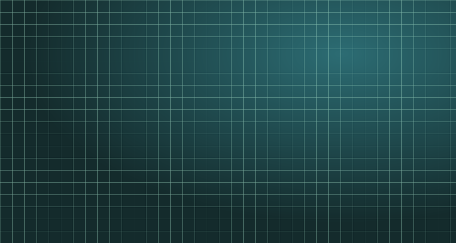
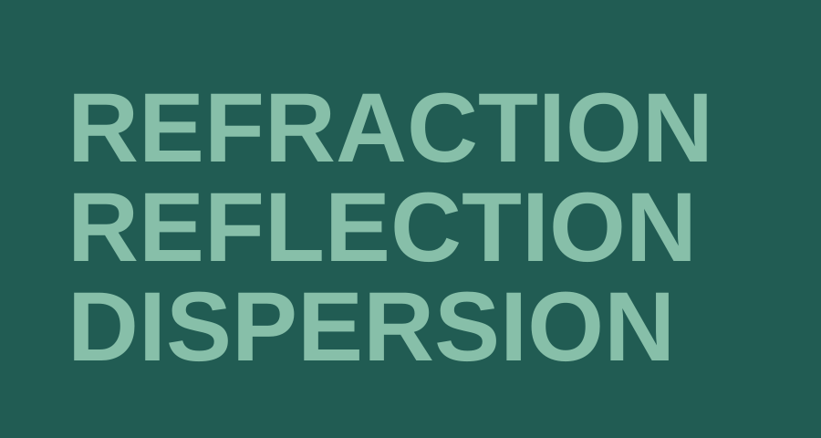

Live HTML
Select this text, then open the integration examples.
mise run dev, then open
the local playground.
Make an ordinary element refract light. Tune the optics and compare element, backdrop, and frosted glass.



Drag the lens or use the arrow keys when it’s focused.
The selected backdrop is unavailable. Showing frosted glass.
The header copies the page below it when scene copy is enabled. Scroll to compare; turn it off to follow the selected renderer.
Select this text, then open the integration examples.
Use the same options in plain JavaScript or bind them to your framework’s lifecycle.